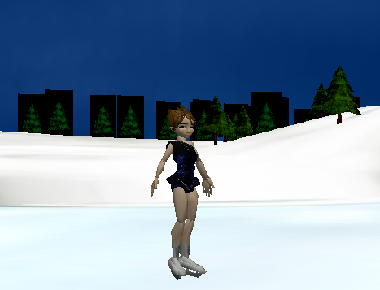
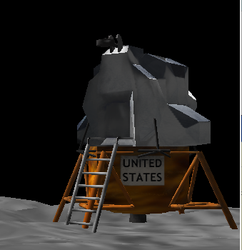

- Getting Started with Alice (5 points)

Open the Alice animation system and choose Open World from the File Menu (this should automatically open when you open Alice). Click on the Tutorial tab, and choose Tutorial 1. Work through the entire tutorial. Note more explicit directions on starting Alice can be found in the textbook.
- Placing & Moving Objects (5 points)

Open the Alice animation system and choose Open World from the File Menu (this should automatically open when you open Alice). Click on the Tutorial tab, and choose Tutorial 4. Work through the entire tutorial.
- Favorite Animal (5 points)

Create a world for your favorite animal (chosen from the Animals gallery). Have your animal do at least three things.
- Penguin (15 points)

Programming Project 1.1 (p 21): Create an Alice world in which a penguin waddles towards a hole in a frozen lake, tips over, and falls in. The Penguin class can be found in the Animals gallery and the FrozenLake class can be found in the Environments gallery. Use the Circle class (colored gray) from the Shapes gallery to make the hole in the ice. In addition to the standard built-in methods, the Penguin class comes with a few other methods that you can call to help with this animation.
- Combination Lock (10 Points)

Programming Project 1.2 (p 21): Create an Alice world that shows a combination lock being dialed and then the latch opening. Instead of the suggested combination, use for the first two numbers the day and month that you were born. The ComboLock class is in the Objects gallery.
(Hint: the lock is made up of a latch and a dial. Experiment with rolling and moving these components.) - Moving Vehicles (10 Points)

Alice has a simple way to do statements at the same time: you place those statements inside a Do Together block.
Do one of the Programming Project 1.4 or 1.5 (p 22) and create a set of vehicles (either planes and other flying objects, or various boats) that move around the world. You must have at least three objects that move at different speeds and in different directions.
- Helicopter Flight (15 Points)

Programming Project 1.10 (p 23): Create an Alice world in which a helicopter lifts off the ground, flies in a wide circle, and lands. (An object can move in a circle by moving forward and turning one full rotation simultaneously.) The helicopter's propellers should be rotating whenever the helicopter is in the air. The Helicopter class can be found in the Vehicles gallery.